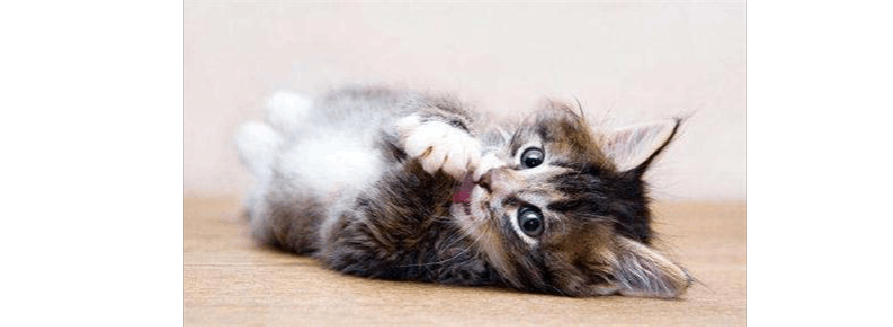
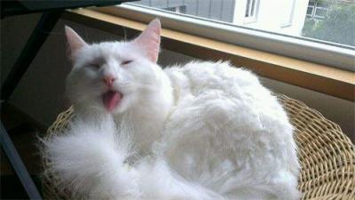
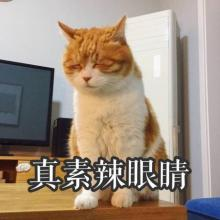
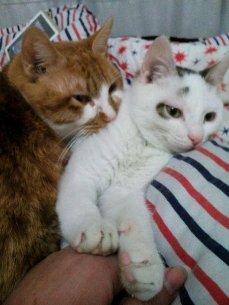
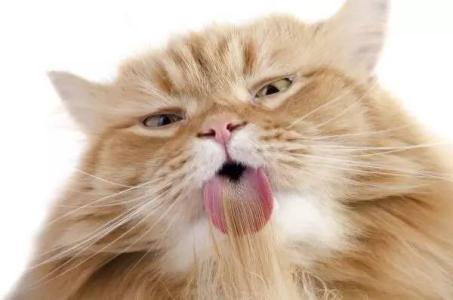

你家的猫该去毛球啦！
猫奴都知道，猫咪的一天中60%的时间用来睡觉，10%的时间用来吃饭玩耍，剩下30%的时间都用来舔毛，铲屎官们有没有想过，猫咪舔完的毛都进到哪里去了呢？
猫咪每天用舌头梳理自己的毛发，大部分舔下来的毛都进入到了猫咪自己的肠胃中，而毛发又无法被身体吸收，常见的两种解决方法是吐毛和排泄毛球。
有的时候会看到猫咪有呕吐的举动，那是猫咪感知到了体内毛发过多，试图将毛球呕吐出来。但是就像人的催吐一样，呕吐会伤害身体，所以尽量不要让猫咪体内的毛球积累过多，达到需要自行呕吐的量。
还有一种方法就是让毛球随着猫咪的粪便自行排泄出来，这是目前最推荐的方法。让猫咪排泄毛球有很多种方法，比较常见的是让猫咪食用化毛膏。基本上刚开始养猫的时候，猫舍都会告诉你要准备化毛膏。
化毛膏其实并不像名字说的那样能化解毛球，它的作用是促进猫咪排泄，通过油质的润滑让毛球排出，为了让猫咪更爱吃，化毛膏一般都添加糖类或者诱食一类的东西。一般来说，化毛膏一周喂食一次就可以了，根据自家猫咪的毛量来决定一次喂多少，长毛的就可以多喂一些，短毛的可以适当少喂一点。
但是化毛膏并不是纯天然的去毛球产品，像野外的猫咪没有化毛膏都是采用什么方法去毛球的呢？
吃草。没错，猫咪是吃草的，野外的猫咪吃了一些难以消化的东西，会自己找一些草来吃，这也是为什么家养的猫咪喜欢吃家里的花花草草的原因。尽管吃草对猫咪来说没有任何营养，也不会被身体吸收，但是吃草是猫咪最简单的排泄身体不需要的东西的方法。
要注意的是，家里养的花花草草并不适合猫咪食用，可以买一些专门的猫草给猫咪吃。猫草也分好多种，有的猫咪可能偏爱几个品种，铲屎官可以多买一些试试看自家猫咪的口味。
其实要想解决猫咪的毛球问题，还需要从源头上减少猫咪的浮毛现象。那就是勤梳毛，每天给猫咪梳一次毛，保证浮毛量瞬间少一半，猫咪也能少吃一些毛。
